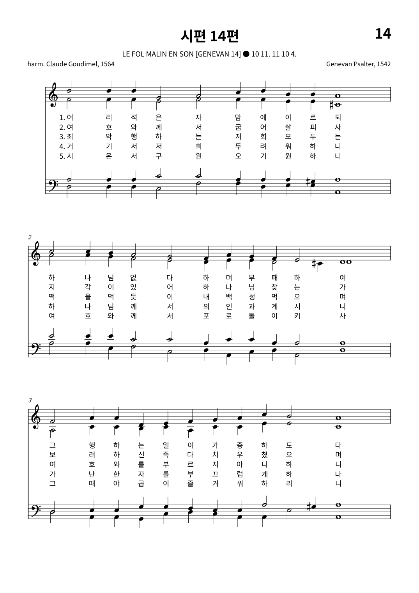

Psalm 14
LE FOL MALIN EN SON [GENEVAN 14] · 10 11. 11 10 4.
English title: The Fool Says in His Heart, “There Is No God.”
Tune: Genevan Psalter, 1542 · Harmony: Claude Goudimel, 1564 · Lyrics: Korean adaptation of Psalm 14 from the Korean Revised Version (AI draft adaptation · not yet theologically reviewed) · 5 stanzas
Score PDF MusicXML (for printing) MusicXML (for accompaniment, with prelude and repeats) Read Psalm 14 (Korean Revised Version)
Score
← Psalm 13 ListAccompaniment (in preparation)Psalm 15 →
Lyrics (Korean)
Stanza 1 (Ps. 1절)
어리석은 자 맘에 이르되
하나님 없다 하며 부패하여
그 행하는 일이 가증하도다
선을 행하는 자가 하나도
없느니라
어리석은 자 맘에 이르되
하나님 없다 하며 부패하여
그 행하는 일이 가증하도다
선을 행하는 자가 하나도
없느니라
Stanza 2 (Ps. 2~3절)
여호와께서 굽어 살피사
지각이 있어 하나님 찾는가
보려 하신즉 다 치우쳤으며
함께 더럽고 선 행할 자가
없으니라
여호와께서 굽어 살피사
지각이 있어 하나님 찾는가
보려 하신즉 다 치우쳤으며
함께 더럽고 선 행할 자가
없으니라
Stanza 3 (Ps. 4절)
죄악 행하는 저희 모두는
떡을 먹듯이 내 백성 먹으며
여호와를 부르지 아니하니
어찌 이리도 저희가 알지
못하는고
죄악 행하는 저희 모두는
떡을 먹듯이 내 백성 먹으며
여호와를 부르지 아니하니
어찌 이리도 저희가 알지
못하는고
Stanza 4 (Ps. 5~6절)
거기서 저희 두려워하니
하나님께서 의인과 계시니
가난한 자를 부끄럽게 하나
오직 여호와 저의 피난처
되시도다
거기서 저희 두려워하니
하나님께서 의인과 계시니
가난한 자를 부끄럽게 하나
오직 여호와 저의 피난처
되시도다
Stanza 5 (Ps. 7절)
시온서 구원 오기 원하니
여호와께서 포로 돌이키사
그때 야곱이 즐거워하리니
이스라엘도 다 함께 크게
기뻐하리
시온서 구원 오기 원하니
여호와께서 포로 돌이키사
그때 야곱이 즐거워하리니
이스라엘도 다 함께 크게
기뻐하리